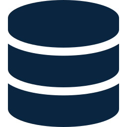
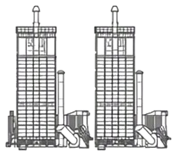
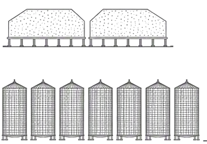

Centro de Excelência Operacional · Cooperativa Agroindustrial Holambra
Visibilidade das operações. Eficiência operacional e financeira.
Estabelecer a estratégia para o desenvolvimento de uma Central de Excelência Operacional, com foco em ampliar a visibilidade das operações e alavancar a eficiência operacional e financeira da Cooperativa Holambra.
Objetivo desta fase
Desenho pré-implementação do COE
Esta fase realiza o desenho pré-implementação do COE: estratégia, modelo operacional e plano de implementação definidos antes da implantação.
Implantação mais harmônicaetapas planejadas antes do início da implantação
Áreas engajadas desde o iníciodesenho construído a partir das necessidades da operação
Alinhada aos objetivos da companhiaprioridades vinculadas aos resultados da cooperativa
Objetivos estratégicos do COE
“Operacionalizar as unidades a distância: a decisão tomada no CoE e o time local fazendo a assistência.”
Visibilidade ponta a ponta
Um único dado confiável, integrado entre processos e unidades, no lugar de bases paralelas e comunicação informal.
Padronização da decisão
Parâmetros de secagem, aeração e segregação definidos por regra e por referência de desempenho, não pela experiência individual.
Previsibilidade da operação
Antecipar desvios, riscos e eventos operacionais, para uma atuação mais preventiva, estável e confiável.
Eficiência do custo
Menos consumo de energia, mais produtividade, manutenção mais eficiente e melhor uso dos ativos e recursos.
Operação remota e escalável
Decisão conduzida na matriz e execução na unidade, com o mesmo padrão replicável às sete unidades.
Rotina de gestão
Indicadores confiáveis sustentando a rotina diária de acompanhamento e a priorização da melhoria contínua.
Ponto de partida e objetivos do COE
Para engajar os stakeholders e trazer clareza sobre os objetivos, as prioridades e os resultados esperados para o COE, foram realizadas 12 entrevistas com as principais áreas envolvidas na operação e nos sistemas que a sustentam, complementadas por visita técnica à unidade de Avaré.
Temas abordados
Objetivo com os stakeholdersComo deve ser o COE da Holambra?
Pessoas
Diferenças de cultura e mindset que podem influenciar a adoção e a escalabilidade do COE.
Métricas e indicadores
Lacunas de visibilidade em indicadores operacionais e a necessidade de padronizar a atualização dos dados.
Automação de processos
Áreas com alto potencial de automação e padronização, reduzindo apontamentos manuais.

Maturidade de dados
Qualidade, acessibilidade e confiabilidade dos dados para apoiar a tomada de decisão.
Entrevistados
Gerente executivo op.Marcel Squinzani
Gestão de projetosAgda Santos
OperaçõesLuiz Gabriel e Claudio Roberto
QualidadeTaniele Costa e Suellen Fogaça
Planejamento e controlePedro Netto
Adm operacionalDavyd Santos
AutomaçãoRobson Vargem
Melhoria contínuaEricke Ramos
Manutenção e dadosLetícia Mendes
Cadastro e filaMaikon Lopes
Visita técnica — Unidade Avaré
Entendimento do fluxo operacional, nível de automação, equipamentos, dados e oportunidades de integração com o COE.
O que se espera do COE
“Operacionalizar as unidades a distância: a decisão tomada no CoE e o time local fazendo a assistência.”
01
Visibilidade ponta a ponta
Um único dado confiável, integrado entre processos e unidades, no lugar de bases paralelas e comunicação informal.
02
Padronização da decisão
Parâmetros de secagem, aeração e segregação definidos por regra e por referência de desempenho, não pela experiência individual.
03
Previsibilidade da operação
Antecipar desvios, riscos e eventos operacionais para atuar de forma preventiva, com mais estabilidade e confiabilidade.
04
Eficiência do custo
Reduzir o consumo de energia, aumentar a produtividade, tornar a manutenção mais eficiente e aproveitar melhor os ativos.
05
Operação remota e escalável
Decisão conduzida na matriz e execução na unidade, com o mesmo padrão replicável às sete unidades.
06
Rotina de gestão
Indicadores confiáveis sustentando rotina diária de acompanhamento e priorização de melhoria contínua.
Nas palavras das áreas entrevistadas
“Centralizar a informação e permitir uma decisão única para todas as unidades.”
“Indicar a aeração pela tendência da termometria, antes de o silo aquecer.”
“Trazer a umidade do secador direto do equipamento, sem apontamento manual.”
“Enxergar a termometria de cada silo em um painel único.”
“Acompanhar se a ficha de secagem é cumprida em todas as unidades.”
“Mostrar quem opera melhor e transformar isso em referência.”
“Conectar as automações isoladas sem depender de ir até a unidade.”
“Cruzar previsão de originação com expedição e ocupação de silo.”
Perspectiva geral dos stakeholders: dores transversais
A cadeia possui sistemas, sensores e controles locais, mas ainda opera com informações fragmentadas, decisões pouco padronizadas e baixa visibilidade ponta a ponta.
01Dados
Integração e centralização de dados
A informação existe, mas está distribuída entre diferentes áreas e sistemas, com indicadores e critérios de medição que podem variar entre as equipes. Isso aumenta o esforço necessário para consolidar os dados e pode gerar diferentes interpretações sobre uma mesma realidade operacional.
02Monitoramento
Visibilidade em tempo real e fim a fim de toda operação
O acompanhamento da operação ainda ocorre, em grande parte, de forma reativa: desvios são identificados após sua ocorrência ou a partir de acionamentos das equipes em campo. Ampliar a capacidade de identificar sinais de desvio em tempo próximo ao real permitiria uma atuação mais preventiva e direcionada.
03Qualidade do dado
Apontamentos manuais
A qualidade e a consistência dos dados dependem, em parte, da forma como os registros são realizados pelas equipes. A ausência de mecanismos estruturados de validação pode reduzir a confiabilidade do histórico e limitar análises comparativas de desempenho entre turnos, unidades ou operações.
04Pessoas e processos
Dependência da experiência do operador e falta de padronização de critérios operacionais
Parte das decisões operacionais ainda depende da experiência e do julgamento de cada equipe ou turno, sem que todas as práticas estejam necessariamente documentadas e padronizadas. Isso cria oportunidades para capturar, estruturar e disseminar as práticas que apresentam melhores resultados entre diferentes equipes e unidades.
05Tecnologia
Automação fragmentada entre unidades
As diferentes arquiteturas e soluções de automação utilizadas na operação apresentam níveis distintos de integração e padronização. Isso dificulta a construção de uma visão consolidada da operação e, em determinados casos, exige atuação presencial para identificação e diagnóstico de ocorrências.
06Conhecimento
Documentação de processo
Parte da documentação operacional, como diagramas, projetos, mapas e prontuários, pode não estar centralizada ou atualizada de forma consistente. Além disso, premissas e cálculos utilizados na construção dos indicadores estão, em alguns casos, concentrados em poucas pessoas.
07Ativos
Cadastro incompleto de ativos
A disponibilidade e atualização da base de ativos é um elemento importante para aprofundar a gestão de desempenho e custos. Uma base estruturada e atualizada permite ampliar a granularidade dos indicadores por equipamento e facilitar o acompanhamento de custos de manutenção por frota, processo ou unidade.
Dores na cadeia operacional
01
Recepção
Dor
Baixa previsibilidade diária de chegadas e volumes (planejamento mensal que pode alterar com fatores externos)
Comunicação de filas e planejamentos com cooperados realizada por canais manuais. Comunicação pouco tempestiva, sem a possibilidade de o cooperado enxergar a situação de filas
Criticidade
02
Qualificação
Dor
Parte das medições, conversões e registros ainda depende de procedimentos e apontamentos manuais
Resultado e eficiência da qualificação podem variar conforme a experiência do classificador
Direcionamento através de comunicação verbal com o motorista; frequentemente caminhões em moegas incorretas
Criticidade
03
Moegas
Dor
Falta de sinalização para motoristas ao chegar nas moegas
Falta de visibilidade do nível de cada moega
Painéis e tombadores com baixa sinalização visual e pouca comunicação para diagnóstico de falhas e paradas (falha de sensor de nível, peso do caminhão ao tombar etc.)
Criticidade
04
Limpeza
Dor
Regulagens são manuais e trocas de cultura exigem longas intervenções
Visibilidade da relação entre o volume de impurezas removidas na limpeza e o grau de impureza registrado na qualificação
Criticidade

05
Secagem
Dor
Medição de temperatura e umidade realizada de forma manual (15 min)
Variáveis de processo isoladas entre sistemas e painéis (fornalha, depressão, RM, condutiva)
Operação depende da experiência do operador
Baixa visibilidade remota dos estados, alarmes e intertravamentos
Qualidade e reposição do cavaco afetam a estabilidade térmica
Criticidade

06
Armazenagem
Dor
Medição de nível limitada; cadastro de cubagem realizado de forma manual 1x por semana
Nos silos, o acionamento da aeração é realizado de forma manual
Falta de histórico consolidado da aeração
Criticidade
07
Expedição
Dor
Estratégias de blend dependem de conhecimento operacional
Comunicação verbal entre operador e motorista para enchimento do caminhão
Ausência de histórico de quantidade e motivo de reprovas
Giro de espaço sensível entre culturas
Criticidade
Foram mapeados 416 indicadores para as etapas do processo de Avaré
São 343 indicadores nas 8 TVs da camada tática, organizados como no mural (uma TV por etapa), 2 no próprio mural da visão geral e 71 na visão estratégica. Na camada tática, 132 têm regra de alerta.
Camadas de leitura: do video wall em tempo real à visão estratégica
Quem lê cada camada, em qual ritual e com quais telas.
Video wall · tempo real
1 · Visão geral das unidades
Visão comparativa de todas as unidades
Apresenta a situação atual de cada unidade e evidencia os desvios, para que o COE identifique onde atuar.
Visão geralRecebimento e filasArmazenagemTermometriaSecagemClima das unidades
Público
Operadores do COE e gerência executiva
Ritual
Leitura diária
2 · Visão da unidade · tática
Detalhamento de cada unidade em tempo real
Apresenta a unidade etapa por etapa, com o detalhamento da operação: fila, classificação, moegas, secadores, silos, armazém e expedição.
RecepçãoClassificaçãoMoegasSecagemSilosArmazémExpedição · DosagemPrevisão do tempo
Público
Operadores do COE, supervisores e pontos focais da unidade
Ritual
Análise de desvios e programação semanal
Em Avaré
343 indicadores em 8 TVs · 132 com alerta
↓
Estratégica · histórico
3 · Visão estratégica
Histórico mensal e anual por área
Analisa tendências e resultados para apoiar a definição de prioridades, investimentos e metas.
Público
Gerência executiva e comitê do COE
Ritual
Fechamento mensal
Em Avaré
71 indicadores em 8 telas
Visão estratégica da unidadeRecepção: recebido no ano e espera médiaClassificação: umidade, impureza e descontadoMoegas: vazão e paradasSecagem: secado e cavaco por m³Silos e armazém: ocupação e giroExpedição: expedido e reprovasClima: chuva e dias parados
Fonte: Mapeamento de indicadores do video wall, versão 1.5 (atualizações até 03/11). As miniaturas são as próprias telas do video wall de Avaré, em funcionamento: ao abrir uma tela, dá para usar os filtros dentro dela.
Ficha de KPI
Os 416 indicadores do mapeamento, cada um com descrição, cálculo, fonte de dados e regra de alerta. Filtre pela tela, pelo fornecedor ou pela situação e abra o indicador.
Fonte: Mapeamento de indicadores do video wall, versão 1.5 (atualizações até 03/11). Campos marcados como “Validar” ainda aguardam confirmação. Baixar o mapeamento em CSV
Diagnóstico da Unidade de Avaré
Como funcionam hoje a automação e os dados de Avaré, a partir da visita técnica às instalações produtivas e do levantamento direto com o time da unidade.
7etapas do processo mapeadas, da recepção à expedição
15sistemas mapeados, entre software e hardware
1etapa com integração plena ao SCADA via CCO
0historiador de processo ativo no CCO atual
01
Fornecedores isolados
A maior parte dos fornecedores (SAUR, FACH, SanTec, RM Engenharia, NBR Tech, Atlas Copco, Autokraft) opera com CLPs e IHMs locais, sem comunicação com o CCO.
02
Dados fragmentados
Os poucos dados digitais disponíveis chegam por sistemas distintos: Império, Evolutize, MS Forms e Jotform.
03
Apontamentos manuais
Grande parte dos apontamentos operacionais ainda é manual, o que aumenta o risco de inconsistência para o futuro COE.
Onde cada sistema está nos cinco níveis da ISA-95 e onde estão as lacunas de integração para o COE.
Nível ISA-95O que é e como está na HolambraSistemas em Avaré
Nível 4ERP
Planejamento de negóciosSistemas ERP: planejamento, área fiscal e comercial.Na HolambraO ERP Evolutize cobre hoje apenas Recepção e Classificação.
Evolutize
Nível 3Supervisão · SCADA
Gestão das operaçõesMOM, MES e SCADA que gerenciam as operações.Na HolambraO CCO deveria alimentar o COE com histórico, visão consolidada e alarmes, mas o SCADA atual opera sem historiador.
Omega Engenharia · SCADA BluePlant
Ideal para o COE: dados disponíveis a partir da supervisão (nível 3)
Nível 2Controle · CLP, IHM, SDCD
Monitoramento e supervisão do controleCLPs, SDCDs e outros dispositivos de controle.Na HolambraConcentra controles e intertravamentos de segurança via IHM/SCADA. Ainda pontual, sem alarmes centralizados.
ImpérioFACHNBR TechRM EngenhariaCondutivaFockink
Nível 1Campo · sensores e atuadores
Sensoriamento e manipulaçãoSensores, dispositivos inteligentes, válvulas e atuadores.Na HolambraInstrumentação de campo, válvulas elétricas, inversores e acionamento hidráulico, que sente e atua sem tomar decisões.
SAURSanTecAutokraft
Nível 0Processo produtivo
Processos físicos de produçãoMáquinas e ativos no campo.Na HolambraO grão em fluxo contínuo, movido por motores, esteiras, elevadores, moegas e secadores.
Atlas CopcoJotformMS Forms
Os sistemas e fornecedores presentes em cada uma das oito etapas, da recepção à expedição.
Fonte: visita técnica às instalações em 09/09/2026 e levantamento direto com o time da unidade.
O dado já existe na maioria dos painéis; falta o caminho até o CCO
Esta é a visita técnica equipamento por equipamento, na ordem em que o grão percorre a unidade. Para cada um: o que foi encontrado, que dado ele já gera e o que falta para esse dado chegar ao COE.
Destaques da visita
Situação de comunicação dos equipamentos visitados
Clique em uma situação para ver só esses equipamentos.
1Recepção e moegas
Cancelas, semáforos e leitores de TAG já alimentam o Império com entrada, descarga e saída do caminhão. Esses eventos sustentam fila, tempo por etapa e cargas por moega na Onda 1.
Equipamento
O que foi encontrado
Comunicação
Dado disponível
O que falta
Cancelas e leitores de TAG
Painel Autokraft +PC11: CLP Wago, módulos de E/S e switch Ethernet
Ethernet
Eventos do caminhão e sinais das moegas
Mapa de variáveis e confirmação da comunicação com o SCADA
Nível da moega
Sensor indutivo sob a grelha, que indica moega cheia
A avaliar
Primeira fonte para o status de capacidade
Aproveitar o sinal antes de instalar sensores contínuos
Segregação por moega
Quadro branco preenchido à mão, moegas M01 a M06
Manual
Cultura, umidade (corte em 14,5%) e impureza (corte em 1,4%)
Levar ao Império e ao COE de forma estruturada (tela 03, Segregação por Moegas)
2Tombadores
O tombamento é comandado só por botoeiras locais SAUR, sem sinalização remota, e os dois tombadores têm acionamentos diferentes. Na visita, a tela do inversor do tombador 02 exibia um código de falha ativo.
Equipamento
O que foi encontrado
Comunicação
Dado disponível
O que falta
Tombador 01
Soft starters Siemens SIRIUS e controlador HC-03
Sem porta identificada no HC-03
Horas de bomba e ciclos (2.925,9 h e 14.862 ciclos) e sinaleiros de falha
Confirmar se o HC-03 tem saída de dados; se não tiver, levar os sinais por remota de I/O
Tombador 02
Inversor Siemens SINAMICS com painel BOP-2 e controlador HC-03
Depende da unidade de controle
Horas de bomba (1.247 h) e estado ou falha do inversor
Confirmar com NBR Tec e SAUR o modelo da unidade de controle: o BOP-2 é só painel de operação
3Fornalha e cavaco
Na FACH, os dados já estão no controlador e há porta física; depende apenas da liberação do mapa de memória. Na depressão é diferente: na SanTec só foram identificados leitura local e relés.
Equipamento
O que foi encontrado
Comunicação
Dado disponível
O que falta
Central de cavaco FACH
CLP Schneider M221 (TM221CE16R) e IHM Harmony de 10 polegadas
Ethernet no CLP; Ethernet, RS-232 e RS-485 na IHM
Status da máquina, motores M1 a M4, temperaturas de secagem e da fornalha, alarmes
Liberação do mapa de memória pela FACH
Depressão da fornalha
Manômetro SanTec de 6 canais, com leitura local
Sem porta identificada, só relés
Leitura local (na visita, P3 em 21 e P4 em 00 mmH₂O)
Confirmar saída analógica ou comunicação; se não houver, instalar transmissores de pressão
Servomotor do registro
Caixa de comando local, manual ou automático, abre e fecha
Só local
Nenhum sinal chega ao CCO
Sinalizar o status ao CCO
Ver as faixas de depressão afixadas no equipamento
Ponto de medição
Fluxo R (mmca)
Fluxo CI (mmca)
P1
02 a 06
02 a 06
P2
18 a 23
16 a 20
P3
20 a 25
20 a 25
P4
00 a 10
36 a 43
P5
36 a 43
36 a 43
Transcrição da tabela afixada no manômetro. Confirmar com a Operação e com a SanTec antes de configurar como alerta no COE.
4Fluxo do grão
A IHM da NBR Tec mostra em tempo real da moega à expedição, mas nada disso chega ao CCO.
Equipamento
O que foi encontrado
Comunicação
Dado disponível
O que falta
Automação NBR Tec
CLP S7-1200 e IHM Siemens SIMATIC com telas próprias da Holambra
Isolado do CCO
Caminho do grão, válvulas e registros com sensor de posição, fechamento automático das moegas, falhas e níveis altos
Acesso às variáveis junto à NBR Tec
5Secadores
Com os secadores desligados, um sensor indicava umidade de −1,8%. O dado não pode ir ao COE antes de concluída a calibração.
Equipamento
O que foi encontrado
Comunicação
Dado disponível
O que falta
Condutiva
IHM Schneider Magelis e CLP Schneider
Ethernet
Produto, status, umidade e temperatura de entrada e saída dos secadores 1 e 2
Concluir a calibração
Proteção contra incêndio
Dois painéis RM Engenharia com Siemens LOGO!
Isolado do CCO
Sinaleiros de temperatura (saída da fornalha e exaustor) e de nível baixo e alto
Verificar a liberação do programa e dos sinais
6Expedição
A balança de fluxo já aparece na IHM da NBR Tec, o que permite conferir o peso que o Império registra na balança rodoviária.
Equipamento
O que foi encontrado
Comunicação
Dado disponível
O que falta
Balança de fluxo
Balanças Jundiaí, com leituras Sexp-1 e Sexp-2 na IHM NBR Tec
Via NBR Tec
Volume expedido por carregamento
O mesmo acesso às variáveis da NBR Tec
7Sala de painéis e energia
É uma base de automação atual, em rede e com protocolo aberto. O fator de potência lido na visita foi 0,828, abaixo do mínimo regulatório de 0,92. É uma leitura pontual, mas indica oportunidade.
Equipamento
O que foi encontrado
Comunicação
Dado disponível
O que falta
Painel 1
CPU Siemens S7-1500 1515-2 PN, remotas ET 200SP e um conjunto S7-1200
Profinet
Status e falhas de motores; a remota comanda a partida dos elevadores
Confirmar se corresponde à automação Omega já integrada
Painel 2
12 inversores SINAMICS V20 (U1 a U12), remota ET 200SP e fonte SITOP
Em rede, protocolo aberto
Depende das cargas acionadas, não detalhadas no estudo
Confirmar as cargas acionadas
Multimedidores
IMS PowerNET M-300 e Siemens SENTRON PAC3200 e PAC3220
Porta a confirmar
Tensão, corrente, potência aparente e frequência por fase
Confirmar a porta de cada modelo. Se houver, consumo e demanda entram sem novos medidores
Fator de potência
Controlador WEG PFW01 do banco de capacitores
Fora do SCADA
Fator de potência
Integrar ao SCADA e incluir no mapeamento como indicador complementar
8Termometria, aeração e limpeza
O NBR Termo A tem módulo de comunicação e cabos, mas mostrava "Aguardando Central" com data de 01/01/2000: há infraestrutura, sem conexão ativa.
Equipamento
O que foi encontrado
Comunicação
Dado disponível
O que falta
Termometria e aeração Fockink
Central digital e módulos remotos MR-M com três Smarter CLP f2
RS-485 e wireless
Termometria do armazém e comando da aeração
Gateway RS-485 para Ethernet e protocolo do fornecedor
NBR Termo A
Módulo de comunicação NBR Tec, porta serial e cabos de rede
Serial, sem conexão ativa
Sem leitura: equipamento sem comunicação com a central
Reativar a comunicação e acertar o relógio
Máquina de limpeza SCS-170
Kepler Weber: quadro com Siemens LOGO! TDE e dois inversores SINAMICS, 7 motores
Protocolo a confirmar
Alarmes ativos, horímetro, velocidades e plano de manutenção (4 h, 24 h e 4.000 h)
Confirmar a porta do LOGO! e o protocolo dos inversores
9Silos e armazém
Já existe fibra até o armazém. A rede OT do COE deve partir dela e da porta Ethernet do painel Autokraft, ampliando para os painéis ainda isolados.
Equipamento
O que foi encontrado
Comunicação
Dado disponível
O que falta
Painel de campo Omega
Remota ET 200SP (IM 155-6 PN/2 HF), switch SCALANCE com fibra e fonte SITOP
Integrado ao SCADA por fibra
Pré-limpeza 3, esteiras e elevadores
Validar documentação, licenças e abrangência dos sinais. Há resíduos no fundo do painel e desgaste na vedação da porta
10Supervisão no CCO
Antes de criar novas medições, o estudo recomenda revisar o projeto que já existe. Corrente, mancais e horímetro já chegam ao SCADA, mas o alerta não funciona: os limites estão em 000.
Equipamento
O que foi encontrado
Comunicação
Dado disponível
O que falta
SCADA BluePlant
Projeto "UBC Avaré Desktop 1", em monitor comum, acessado como usuário "Guest"
Recebe a área Omega e o armazém
Corrente, temperatura de mancais, horímetro, 27 aeradores e 17 registros por redler
Configurar limites de alarme, validar leituras zeradas, criar usuários por operador e incluir o historiador
Fonte: Estudo de Viabilidade Técnica do COE, revisão A (emissão preliminar), capítulo 4, e registro da visita técnica (2026). Leituras de campo valem para o momento da visita. A coluna Comunicação e a barra de situação são uma leitura deste painel sobre o texto do estudo, não uma classificação do documento original. Criticidade e prontidão de cada sistema em Situação atual.
As lacunas de campo têm caminho definido, e parte delas começa sem investimento em campo
São as alternativas que o estudo avaliou para medir o que hoje não existe. As soluções são referências técnicas para orientar o Projeto Executivo e a cotação, não representam decisão de compra nem indicação exclusiva de fornecedor; recomenda-se cotar ao menos duas alternativas equivalentes.
Depressão das fornalhas: da leitura manual à coleta automática
Hoje um colaborador verifica a depressão na fornalha a cada 15 minutos. Além de consumir tempo de operação, a leitura manual não gera tendência nem alarme e depende da disciplina de registro. As alternativas avaliadas permitem avançar por etapas, começando sem investimento em campo.
Alternativa
Como funciona
Ganho
Limitação
Custo
A – Formulário digital
Leitura a cada 15 min registrada em formulário com data, hora, ponto, valor e ação tomada
Histórico imediato e validação da faixa no registro
Continua manual
Baixo
B – Relés em remota de I/O
Relés de alarme do SanTec ligados a entradas digitais da rede OT
Alarme automático de fora de faixa no COE
Não fornece o valor contínuo
Baixo
C – Saída do próprio SanTec
Uso de saída analógica ou comunicação, se o modelo dispuser
Valor contínuo sem novo instrumento
Depende do modelo instalado
Baixo a médio
D – Transmissores 4–20 mA
Um transmissor de pressão por ponto (P1–P5), ligado a remota ou CLP
Valor contínuo, tendência e alarme em tempo real
Instalação em campo e área classificada
Médio
E – Manômetro com comunicação
Substituição por modelo multicanal com Modbus
Solução integrada em um equipamento
Troca do instrumento em operação
Médio
Recomendação: implantar a alternativa A imediatamente (Fase 1), somar B para alarme automático e decidir entre C e D após a resposta da SanTec. A operação paralela manual e automática deve durar ao menos duas semanas, comparando as leituras antes de desativar o registro manual.
Scanner 3D de nível para silos e armazém
Hoje, o estoque dos silos e do armazém não tem medição automática: 7 informações do painel de silos e armazenagem estão sem fonte e outras 4 dependem de apontamento no Microsoft Forms. Em silos de grande diâmetro e no armazém graneleiro, a superfície do grão não é plana (forma cone na entrada, cratera na saída e rampas junto às paredes), e um sensor de nível de ponto único mede apenas um ponto dessa superfície, o que gera erro no volume. O scanner 3D acústico mede vários pontos da superfície, monta o relevo do grão em 3D e calcula o volume real, inclusive com poeira.
Local
Solução recomendada
Quantidade de referência
Silos de armazenagem (grande diâmetro)
Sistema com múltiplos scanners 3D combinados em um único volume
2 a 3 por silo, conforme diâmetro dimensionar
Armazém graneleiro
Múltiplos scanners 3D por área/célula
Conforme comprimento e divisão do armazém dimensionar
Recomenda-se um teste piloto em um silo de armazenagem antes da compra para todos os silos, comparando o volume medido pelo scanner com o saldo de movimentação do Império e com a última medição manual. Tecnologias equivalentes de outros fabricantes devem ser cotadas na mesma especificação.
Ver a ficha da solução e a referência de mercado
Item
Descrição
O que é
Sensor sem contato instalado no teto do silo que emite som de baixa frequência, recebe os ecos de múltiplos pontos da superfície e gera o relevo do produto e o volume armazenado
O que entrega
Volume e ocupação reais; nível mínimo, máximo e médio; imagem 3D da superfície; identificação de cone para cima ou para baixo e de acúmulo de produto na parede
Onde aplicar em Avaré
Silos de armazenagem e armazém graneleiro (superfície irregular e grande diâmetro). Silos pulmão e moegas seguem com radar/sensor indutivo existente (volume menor e superfície mais regular)
Informações do painel atendidas
Visão geral: espaço disponível, produto em estoque e capacidade (AVR-VG-E01 a E03); Silos: ocupação e estoque por silo (AVR-SIL-A03, A04) e estoque atual (AVR-SIL-B06, hoje em Forms); Armazém: capacidade, ocupação e volume armazenado (AVR-ARM-A02, A04, A05, hoje em Forms)
Integração ao COE
Saídas 4–20 mA/HART e RS-485/Modbus (e TCP/IP conforme modelo) para o SCADA/historiador; software próprio de visualização 3D pode ser exibido no videowall
Requisitos de instalação
Bocal/flange no teto de cada silo, alimentação 24 Vcc e cabo de comunicação até o painel mais próximo; modelo certificado para atmosfera explosiva por poeira; instalação em altura (NR-35)
Ganhos além do indicador
Estoque confiável para comercialização e contratos; fim da medição manual com subida ao topo do silo (segurança); alerta de enchimento excessivo e de carregamento desigual das paredes, que pode causar dano estrutural
Pontos de atenção
Custo por silo maior que o radar; silos de grande diâmetro podem exigir 2 ou mais scanners; validar o posicionamento com o fornecedor a partir das dimensões e da estrutura interna (cabos de termometria) de cada silo
Característica
Referência de mercado – BinMaster 3DLevelScanner
Tecnologia
Acústica de baixa frequência, sem contato, que atravessa a poeira
Alcance de medição
Até 61 m
Saídas
4 fios 4–20 mA / HART / RS-485 / Modbus
Alimentação
20 a 32 Vcc
Certificações
Áreas classificadas (ATEX / IECEx e FM, incluindo poeira combustível)
Software
Visualização 3D de múltiplos silos em rede local
Representação no Brasil
Distribuidor autorizado no Brasil (Grunn)
Referência de custo: instrumentação complementar
Fonte: Estudo de Viabilidade Técnica do COE, revisão A (emissão preliminar) e arquivo de apoio (2026). Classificação do documento: restrita.
Piloto do COE na Unidade Avaré
Piloto em Avaré e estruturação da infraestrutura na matriz. A partir da consolidação e validação dos dados, o CoE passa gradualmente a apoiar o monitoramento e a tomada de decisão, enquanto a unidade permanece responsável pela execução das atividades e pelo suporte local.
Fichas dos equipamentos
Para cada uma das 11 automações de campo: etapa, fornecedor, função, infraestrutura, criticidade e prontidão para o COE. Clique em uma ficha para ampliar e navegar entre elas. Os quatro sistemas de informação estão em Sistemas e históricos.
A sala do COE já está dimensionada; falta decidir o local e o tamanho do videowall
O estudo define o que a sala precisa ter, quanto ocupa e o que cada tela mostra. A escolha do local é uma das decisões da diretoria, e o tamanho do videowall depende dela.
Opções de videowall, na mesma escala
Monitores de 55 polegadas. Valores sem a parede de CFTV, que é item separado. A distância de visualização deve ser validada no projeto da sala (ISO 11064).
Zoneamento de referência
Todas as telas da sala
TV comercial ou monitor profissional
O que centros de operação de referência têm
Referência de custo: infraestrutura física
Fonte: arquivo de apoio do Estudo de Viabilidade Técnica do COE (aba 02), revisão A (emissão preliminar). A comparação entre o mural e as opções é leitura do painel. Classificação do documento: restrita.
Arquitetura de automação: das ilhas ao COE
Onde cada sistema está, nível a nível (N0 a N4, ISA-95) e etapa a etapa, e como ele se comunica. Compare a situação atual com o modelo-alvo, em 2D ou em 3D.
CLP Controle SCADA/IHM Supervisão IntegradoIsoladoEm testeA confirmar Comunicação ativa Sistema próprio do fornecedor
As esteiras e elevadores têm disjuntores-motores com status de falha; os atuadores pneumáticos têm sensor de fim de curso para detectar o fluxo do produto.
Quatro frentes para integrar os dados ao COE
1
Integração dos CLPs isolados
Conectar SAUR, FACH, SanTec, RM, NBR Tech, Atlas Copco e Autokraft ao SCADA central.
2
Historiador de processo
Implantar historiador no CCO/SCADA, habilitando tendências e indicadores históricos hoje inexistentes.
3
Digitalização dos apontamentos
Padronizar os registros hoje manuais (MS Forms, Jotform), reduzindo erros e inconsistências.
4
Visão única de alarmes
Consolidar alarmes e indicadores operacionais em uma camada única para o COE.
Onde estão os dados e se há histórico
Os sistemas de informação que alimentam o COE e o que ainda precisa ser localizado nos supervisórios dos fornecedores. Só onde há histórico dá para formar a linha de base sem esperar a nova coleta.
Fichas dos sistemas de informação
Clique em uma ficha para ampliar e navegar entre elas.
Onde está cada dado e se há histórico
Sistema
Dados disponíveis
Onde estão
Forma de acesso
Histórico
Império
Eventos e tempos por etapa, pesos, qualidade por carga, moegas, contratos e expedição
Base do Império
API ou réplica somente leitura
A confirmar
Evolutize → SAP
Contratos, estoque, cadastros mestres e financeiro
ERP
Adaptador desacoplado
Sim
Fockink
Temperatura por sensor, aeração, alarmes
Central / supervisório local
Gateway ou protocolo do supervisório
A confirmar
NBR Tec
Estados do fluxo, níveis, balanças de fluxo, termometria (Termo A)
CLP, IHM e possíveis relatórios
Profinet/S7, OPC UA ou banco
A confirmar
SanTec
Depressão P1–P5 e relés de faixa
Display local e anotação manual
Formulário, remota ou 4–20 mA
Não
FACH / Condutiva
Temperaturas, setpoints e umidade da secagem
CLPs Schneider
Modbus TCP
Não
Forms / Jotform
Secagem, resíduos, teste de coluna e OS
Nuvem
Exportação ou API
Sim
SCADA BluePlant / Omega
Corrente, mancais, horímetros e aeradores
SCADA do CCO
OPC UA / driver do SCADA
Não
Fockink: supervisório de termometria e aeração
A Fockink dispõe de sistema supervisório associado à central de termometria digital (RS485/wireless) e aos módulos remotos de motor (MR-M) que comandam a aeração. Hoje esse sistema é consultado apenas localmente. Para o COE, interessa identificar o que é monitorado, o que fica gravado e como ler esses dados sem interferir no controle.
Informações monitoradas: temperatura por sensor e por cabo, temperatura máxima por célula do armazém, estado e modo (automático/manual) de ventiladores e exaustores, alarmes de aeração e, se houver sensores externos, temperatura e umidade do ar
Dados disponíveis: leituras instantâneas na central e, conforme a versão do software, histórico local exportável – retenção e formato a confirmar com a Fockink
Como aproveitar: (1) exportar o histórico existente para formar a linha de base; (2) ler as variáveis em tempo real por gateway RS485 → Modbus TCP ou pelo protocolo do próprio supervisório; (3) gravar no historiador e aplicar a regra de aeração por equilíbrio higroscópico (iniciativa 63 do Plano Mestre)
A confirmar: versão do software e onde ele roda, protocolo e mapa de variáveis, licença de comunicação e retenção do histórico
NBR Tec: onde procurar relatórios e histórico
A IHM da NBR Tec exibe em tempo real a rota do grão, válvulas, níveis e balanças de fluxo, mas não se sabe se esses dados geram relatórios nem onde ficam armazenados. A investigação deve percorrer, nesta ordem, os locais onde esses registros costumam estar:
Cartão de memória ou registros de dados (data logs e alarm logs) da própria IHM SIMATIC
Computador de supervisão local ou notebook de manutenção do fornecedor
Banco de dados instalado pela NBR Tec em servidor da Holambra (por exemplo, SQL Server ou arquivo local)
Servidor ou nuvem do próprio fornecedor, acessado mediante solicitação
A forma de acesso depende do que for encontrado: se houver banco de dados próprio, a recomendação é um usuário somente leitura com visões específicas e carga do histórico; se houver apenas arquivos, uma ingestão agendada para a camada de dados; se não houver registro, a integração direta com o CLP por Profinet/S7 ou OPC UA passa a gravar o histórico no historiador do COE, que começa a contar a partir do go-live. Nos três casos, o acesso deve ser formalizado com o fornecedor.
Fonte: Estudo de Viabilidade Técnica do COE, revisão A (emissão preliminar) e arquivo de apoio (2026). Classificação do documento: restrita.
Hoje o dado existe, mas fica em ilhas: o COE é viável, com condicionantes
O principal desafio não é gerar dados, e sim tirá-los das ilhas: o Império, os formulários e os painéis dos fornecedores já produzem a maior parte das informações do painel, mas nenhuma chega padronizada e com histórico a um ponto único.
300 de 416informações saem de sistemas que já existem, sem obra de campo
14 de 15sistemas com prontidão baixa para o COE, inclusive os mais críticos
1 de 11automações de campo integrada ao SCADA do CCO
0historiador de processo ativo no CCO
De onde vem cada informação
Recepção, classificação, expedição e contratos ficam prontos na Onda 1. Secagem, pressão, silos e armazém são as telas que mais dependem de integrar a automação.
Onda 1: integrar sistemas
Camada de dados, Império, Evolutize, formulários, clima e videowall operacional. Sem obra de campo.
Onda 2: integrar a automação
Mapas de memória dos fornecedores, rede OT, SCADA com historiador, alarmes e estação meteorológica.
Onda 3: completar e automatizar
Instrumentação ou fonte complementar para o que não tem origem definida, trocando apontamentos por medição.
Origem
Informações
Principais telas
Caminho até o COE
Onda
Sistema Império
214 (51%)
Recepção, fluxo, classificação, moegas, expedição, contratos e histórico
Leitura da base/API do Império (ou via Evolutize/SAP) para a camada de dados do COE
1
Forms, Jotform e cadastros
63 (15%)
Secagem, produtividade, armazém, conciliação da pré-limpeza, paradas, dosagem
Integração dos formulários e do apontamento do CCO; substituição gradual por medição
1
Previsão do tempo (Climatempo)
23 (6%)
Previsão do tempo
Contratação e integração por API
1
CLPs, supervisórios e estação meteorológica
79 (19%)
Secagem, pressão, silos, armazém, moegas, clima medido e histórico
Mapa de memória + módulo/gateway + SCADA + historiador
2
Sem fonte definida
37 (9%)
Recepção (frete de retorno), moegas, secagem, cavaco, silos
Instrumentação complementar ou cadastro
3
Criticidade e prontidão para o COE
Das 11 automações de campo, apenas a da Omega Engenharia está integrada ao SCADA do CCO. Essa distância entre o que é crítico e o que está pronto é o principal gap do COE e só se resolve com o envolvimento direto de cada fornecedor.
Criticidade dos dadosProntidão baixa (1 a 2)Prontidão média (3)Alta (4 a 5)
Prioridade 1
FACH, SanTec, Condutiva, NBR Tec (transporte e armazenagem), Fockink, Império, Evolutize, Microsoft Forms, Jotform
Ampliar o que já existe
Omega Engenharia
Média ou baixa (2 a 3)
Prioridade 2
SAUR, RM Engenharia, Atlas Copco, Autokraft
Nenhum sistema
Ver a nota de cada sistema
Fornecedor
Etapa
Integrado
Criticidade
Prontidão
Observação
SAUR
Moega
Não
2
1
Comando local por botoeiras, sem sinalização de falhas; diagnóstico depende do eletricista em campo
FACH
Fornalha
Não
4
1
CLP/IHM Schneider com Ethernet; requer liberação do mapa de memória
SanTec
Fornalha
Não
4
1
IHM local; diagnóstico cita porta de comunicação, não identificada em campo (só relés)
RM Engenharia
Secadores
Não
3
1
Siemens LOGO! isolado; verificar liberação do programa e dos sinais
Condutiva
Secadores
Não
5
1
Em calibração (leitura de −1,8%); dados a cada <10 min, essenciais para a secagem
NBR Tec
Transporte
Não
5
1
S7-1200 com lógica disponível, mas isolado; acesso às variáveis com o fornecedor
NBR Tec
Armazenagem
Não
5
1
Termo A “Aguardando Central”; validar acesso com o fornecedor
Omega Engenharia
Armazenagem e expedição
Sim
5
3
S7-1500 integrado ao BluePlant; validar documentação, licenças e abrangência dos sinais
Fockink
Armazenagem
Não
5
1
Central RS485; requer protocolo e mapa de memória
Atlas Copco
Utilidades
Não
2
1
Elektronikon com IHM local; validar protocolo e variáveis
Autokraft
Recepção e moega
Não
2
1
CLP Wago com switch Ethernet; confirmar comunicação com o SCADA
Evolutize
Recepção e classificação
Sim
5
1
Integrado ao Império; avaliar acesso, estrutura e qualidade dos dados para o COE
Império
Recepção e classificação
Sim
5
1
Principal origem dos dados (51% do painel); avaliar meios de extração
Microsoft Forms
Limpeza, secagem e armazenagem
Não
5
2
Preenchimento manual, campos sem validação
Jotform
Manutenção
Não
5
2
Avaliar prioridade, responsável, status, prazo e encerramento das OS
Parecer por dimensão
A viabilidade econômica ainda está a confirmar. Os custos são referenciais e os ganhos ainda não foram medidos. Sem a linha de base aprovada, o retorno não deve ser apresentado como decisão.
Cobertura de cada tela do videowall por onda
Clique em uma tela para abrir os indicadores dela na Ficha de KPI.
As 37 informações sem fonte definida e a fonte proposta
Grupo de informações
Qtd.
Fonte proposta
Cavaco: entrada, consumo e consumo por m³ (operacional e histórico)
8
Pesagem das carretas de cavaco no Império/balança e consumo por fornalha (FACH ou apontamento)
Silos: cultura, identificação, umidade, ocupação e estoque
6
Scanner 3D de nível, cadastro operacional e teste de coluna (MS Forms)
Secadores: fase, próxima parada e limpezas
5
Status do CLP Condutiva/NBR Tec + horímetro; registro de limpeza em formulário
Histórico: moega parada, recepção parada por chuva e umidade de saída
5
Registro de paradas (Jotform) e base histórica mensal da camada de dados
Recepção: cargas retornadas do porto e frete de retorno
4
Lançamento por carga no Império (ou SAP) pela logística; hoje o aviso chega por e-mail
Moegas e silos pulmão: status, capacidade, ocupação e volume
4
Sensor indutivo de moega cheia existente; radar por moega e por silo pulmão; capacidade em cadastro
Produtividade: paradas, ocorrências, umidade de entrada por hora e tempo de limpeza
4
Jotform padronizado + umidade de entrada da Condutiva
Pressão dos secadores: ocorrências do turno
1
Eventos de paradas e pontos fora da faixa gravados no historiador
Decisões que só existem com os sistemas integrados
Situação
Sistemas que precisam estar integrados
O que o COE passa a fazer
Fila crescendo com moega cheia
Império + Autokraft + NBR Tec
Direcionar a descarga para a moega livre e regular a liberação na portaria
Grão muito úmido recebido
Império + Condutiva + FACH
Ajustar a secagem antes de o grão chegar ao secador
Depressão da fornalha fora da faixa
SanTec + FACH + RM Engenharia
Alertar antes do bloqueio ou do risco de incêndio
Ponto quente no silo
NBR Tec / Fockink + API de clima + aeração
Acionar a aeração no horário certo, fora da ponta
Parada de elevador ou esteira
NBR Tec / Omega + Jotform
Abrir ordem de serviço automática e avisar recepção e secagem
Contrato em atraso
Império / Evolutize + Omega + estoque dos silos
Priorizar carregamentos e verificar se há produto disponível
Fonte: Estudo de Viabilidade Técnica do COE, revisão A (emissão preliminar) e arquivo de apoio (2026). Método: visita técnica a Avaré, registro fotográfico, entrevistas com o time local, mapeamento por etapa e nível de automação (ISA-95) e cruzamento de cada informação do painel com o sistema de origem. Onda de cada indicador conferida com o mapeamento 1.5. Escala de criticidade e prontidão de 1 a 5, a partir do diagnóstico de automação e da visita técnica. Equipamento por equipamento em Diagnóstico de campo. Classificação do documento: restrita.
Três cenários, de R$ 8,2 mi a R$ 14,2 mi em 3 anos, e a recomendação fica no meio
Composição do total em 3 anos
Custo por grupo, em R$ mil
Desembolso por trimestre
Os valores servem para priorizar cotações e não são orçamento aprovado: devem ser revistos após o projeto executivo, o site survey de rede, a contagem de tags e as propostas formais.
Fonte: business case do arquivo de apoio (aba 04). Valores em R$ de out/2026, sem impostos detalhados, sujeitos a cotação. Contingência de 20% no Mínimo e no Recomendado e de 25% no Completo, sobre o investimento.
O retorno depende de uma medição que ainda não foi feita
O estudo define como calcular cada ganho, mas ainda não estima valores: sem a linha de base da safra, o payback não pode ser demonstrado. O que já dá para responder é quanto o COE precisa gerar por ano para se pagar.
Simule o retorno
Mova o benefício anual e veja o efeito em 5 anos. Este valor é um teste, não uma estimativa do estudo.
Ganhos a medir na linha de base
Uma integradora única do sensor ao banco de dados; TI e dados fecham a cadeia até o videowall
A automação de campo existe, mas opera em ilhas. A camada de TI ainda precisa ser construída. Controles e intertravamentos permanecem nos CLPs locais: o COE monitora e aciona, sem interferir na proteção.
Cadeia do dado, do sensor ao COE
1SensoresExiste parcialmenteIntegradora
2Painéis e CLPsExiste em ilhasIntegradora e fornecedores
3Rede de campo (OT)Existe parcialmenteIntegradora
4SCADAExiste parcialmenteIntegradora
5Banco de dados e historiadorA construirIntegradora (servidor: TI)
6Rede corporativa e servidoresA construirTI Holambra
7Camada de dados e BIA construirTI Holambra e empresa de dados
8COE e videowallA construirHolambra
Alternativas avaliadas e recomendação do estudo
Decisão
Recomendação
Justificativa
Supervisão
Ampliar o SCADA BluePlant existente
Já integra a área Omega e o armazém; reduz custo e tempo, condicionado a licenças e capacidade de tags
Camada de dados e BI
Banco de dados + BI
Atende às regras de cálculo e alerta do mapeamento; plataforma IIoT pode ser avaliada em fase posterior
Rede OT
Aproveitar a fibra existente e ampliar
Fibra e switch gerenciável já instalados até o armazém
Painéis sem comunicação
Comunicação nativa quando houver porta; remota de I/O nos demais
FACH, Condutiva, NBR Tec e Autokraft têm porta de rede; SanTec, HC-03 e botoeiras não
Nível de silos, armazém e moegas
Scanner 3D em silos e armazém; radar em pulmões e moegas; balanço de massa como conferência
Em silos grandes a superfície do grão é irregular e o radar de ponto único erra o volume
Vazão dos secadores
Correlação corrente × t/h na Onda 3; balança de fluxo se a precisão exigir
Corrente já disponível ou de baixo custo; balança de fluxo tem maior precisão e custo
Pacotes de contratação
Fonte: Estudo de Viabilidade Técnica do COE, revisão A (emissão preliminar) e arquivo de apoio (2026). As soluções de mercado são referências para o projeto executivo, não decisão de compra nem indicação exclusiva de fornecedor. A proposta é confirmar as quantidades em levantamento próprio da integradora. O detalhe físico está em Infraestrutura: Soluções de campo e Sala do COE.
Uma integradora responde do sensor ao banco de dados, em quatro frentes
Esta é a base do termo de referência. A integradora coordena os fornecedores de cada painel e entrega a rede de campo até o switch de borda no CCO. Daí em diante, rede corporativa e servidores ficam com a TI Holambra. Controles e intertravamentos não saem dos CLPs locais.
Premissas da contratação
Responsável único: uma integradora responde pela cadeia que vai do campo ao SCADA e ao banco de dados, com ponto único de responsabilidade perante a Holambra
Fornecedores dos painéis: subcontratados pela integradora quando necessário (ex.: FACH), sob sua coordenação e prazo
Segurança operacional: controles e intertravamentos permanecem nos CLPs locais; o SCADA monitora e comanda, sem substituir a proteção
Padrões antes do projeto: taxonomia, protocolo prioritário, SCADA padrão e padrão de banco/historiador definidos pela Holambra e anexados ao Termo de Referência
Fronteira com a TI: a integradora entrega a rede OT até o switch de borda no CCO; a partir dele, a rede corporativa e os servidores são da TI Holambra
Quantidades: as referências do estudo orientam a proposta; a integradora valida as quantidades em levantamento próprio antes da proposta final
Janela de obra: intervenções em campo na entressafra ou em paradas programadas
1Frente 1: SCADA
Remodela as telas com o fluxo de todos os sistemas, padroniza o nome das variáveis, comunica com os painéis e grava o histórico.
Item
Escopo
Exemplos em Avaré
1.1 REMODELAR AS TELAS COM O FLUXO DE TODOS OS SISTEMAS DE AUTOMAÇÃO
Sensores
Exibir todas as medições do processo em tempo real (pressão, temperatura, corrente, nível, umidade)
Depressão P1–P5 da fornalha; temperatura da fornalha (FACH); corrente dos elevadores; umidade de entrada/saída (Condutiva); termometria dos silos e do armazém
Atuadores
Representar o estado de cada atuador no fluxo do grão (válvulas, esteiras, elevadores, roscas, exaustores, aeradores)
Válvulas V1/V2 dos silos; registros das moegas; elevadores EL-4 a EL-14; aeradores AE01–AE27; roscas de cavaco
Comandos
Disponibilizar os comandos remotos permitidos pela filosofia de operação
Abrir/fechar válvula e registro; ligar/desligar exaustor, aerador e esteira
Controles e intertravamentos
Exibir setpoints, limites e estado dos intertravamentos (lógica permanece no CLP)
Temperatura desejada da fornalha; temperatura limite para bloqueio do exaustor (RM); registro da moega × corrente da esteira
Alarmes
Centralizar alarmes com prioridade, limite, horário e reconhecimento por usuário
Falha na esteira; falha no compressor; depressão fora da faixa; mancal com temperatura alta (hoje limite em 000)
1.2 A 1.4 PADRONIZAÇÃO E DADOS
1.2 Taxonomia
Definir e aplicar o nome padrão de todas as variáveis (UNIDADE-ÁREA-EQUIPAMENTO-VARIÁVEL), vinculado aos IDs do mapeamento
Ex.: AVR-SEC-FOR01-TEMP → AVR-SPR-B02; dicionário de variáveis entregue
1.3 Comunicação com os painéis
Comunicar o SCADA com todos os painéis/CLPs da Frente 2
11 painéis de fornecedores + multimedidores de energia
1.4 Banco de dados
Gravar o histórico das variáveis em banco/historiador, na própria máquina do SCADA ou em servidor dedicado, com interface de leitura para a camada de BI
Retenção: prazo a definir; acesso por OPC UA ou SQL definir com a TI
Ajustes do projeto atual
Corrigir o que já existe no BluePlant
Usuário por operador (fim do “Guest”); limites de alarme hoje zerados; leituras de corrente em 000
2Frente 2: painéis e CLPs
Programa a comunicação de cada painel com o SCADA. Pode exigir subcontratar o fornecedor do painel ou comprar módulos, gateways e remotas de I/O.
Painel / fornecedor
Controlador
Ação da integradora
Subcontratar
Hardware adicional
Tombadores (SAUR / NBR Tec)
Inversor SINAMICS, soft starters, HC-03
Status, falhas e ciclos por entradas digitais; inversor pela rede, se houver porta
NBR Tec / SAUR confirmar
Remota de I/O
Autokraft +PC11
CLP Wago + switch
Leitura via Ethernet (Modbus TCP)
Autokraft (mapa de variáveis)
Não previsto
FACH
Schneider M221 (Ethernet)
Leitura via Modbus TCP
FACH (mapa de memória)
Não previsto
SanTec
Manômetro 6 canais (relé por sensor)
Relés em entradas digitais; valor contínuo por transmissores
SanTec confirmar saída
Remota / transmissores
RM Engenharia
Siemens LOGO!
Ethernet, se a versão permitir; senão, alarmes por entradas digitais
RM Engenharia
confirmar
Condutiva
CLP Schneider (Ethernet)
Modbus TCP após calibração
Condutiva
Não previsto
NBR Tec (fluxo e termometria)
Siemens S7-1200
Profinet/S7 – válvulas, registros, níveis, balanças de fluxo
NBR Tec
Não previsto
Omega Engenharia
Siemens S7-1500 (já integrado)
Validar documentação e ampliar sinais
—
Não previsto
Fockink
Central RS485 / Smarter CLP f2
Gateway RS485 → Ethernet
Fockink (protocolo)
Gateway
NBR Termo A
Módulo de comunicação NBR Tec
Reativar comunicação com a central
NBR Tec
Não previsto
Kepler Weber
LOGO! TDE + SINAMICS
Comunicação do LOGO! ou sinais em remota
Kepler Weber
confirmar
Atlas Copco
Elektronikon
Leitura pelo protocolo do controlador
Atlas Copco
confirmar módulo
Multimedidores de energia
IMS M-300 / SENTRON PAC
Leitura pela rede
—
confirmar porta
3Frente 3: sensores
Fornece, instala, cabeia, calibra e integra os instrumentos das variáveis que hoje não existem.
Variável
Instrumento
Uso no COE
Exigência de execução
Corrente das esteiras e elevadores
Transdutor de corrente ou multimedidor
Relacionar corrente com t/h (vazão e ritmo)
Curva corrente × t/h calibrada com pesagem/balança de fluxo
Nível dos silos e do armazém
Scanner 3D de nível
Ocupação, estoque e espaço disponível
Piloto em 1 silo antes da expansão; NR-35
Nível das moegas e silos pulmão
Radar
Ocupação e status de capacidade
Certificação para poeira combustível
Depressão contínua da fornalha
Transmissor de pressão 4–20 mA
Tendência e alerta por faixa
Somente se o SanTec não tiver saída de dados
Vazão dos secadores
Balança de fluxo
Ritmo e projeção automáticos
Se a correlação de corrente não atingir a precisão necessária
Status e ciclos dos tombadores
Contatos auxiliares em remota de I/O
Descargas e disponibilidade
Padronizar sinais dos dois tombadores
4Frente 4: infraestrutura
O campo fica com a integradora. Rede entre operação e servidores, segurança OT/TI e servidores ficam com a TI Holambra.
Item
Escopo
Responsável
Situação
4.1 CAMPO
Sensores → painéis
Sensores em campo e cabos de comunicação, incluindo eletrodutos, até os painéis com CLP
Integradora
Existe parcialmente
Painéis → SCADA
Rede física (fibra/cabo, eletrodutos, switches) e configuração da rede lógica (endereçamento, VLAN, protocolos), aproveitando a fibra existente até o armazém
Integradora
Existe parcialmente
4.2 REDE (TI)
Operação ↔ servidores
Comunicação entre os computadores de operação (CCO e técnicos) e os servidores de banco de dados – infraestrutura e configuração
TI Holambra
A construir
Segurança OT/TI
Firewall entre rede de automação e corporativa, usuários, acesso remoto seguro e registro de eventos
TI Holambra
A construir
Servidores e ambiente
Servidores, backup, nobreak e climatização do rack de TI (hoje sobre o quadro de força)
O que a integradora entrega além da solução funcionando
Engenharia: P&ID / fluxograma de engenharia, matriz de causa e efeito dos intertravamentos e arquitetura de automação e de rede
Dados: mapa e dicionário de variáveis com a taxonomia aplicada e vínculo com os IDs do painel do COE
Elétrica: diagramas elétricos as-built dos painéis alterados e das novas instalações
Software: backups dos programas de CLP e do SCADA, licenças e senhas sob guarda da Holambra
Capacitação: treinamento de operadores, manutenção e TI; manual das telas
Normas e requisitos de segurança
Referência de custo: sistemas, automação e rede OT
Fonte: Estudo de Viabilidade Técnica do COE, revisão A (emissão preliminar) e arquivo de apoio (2026). Classificação do documento: restrita. A contratação cobre o primeiro horizonte da jornada de automação. Quantidades e valores são referências, a validar no levantamento da integradora.
Integrar depende de 17 empresas, e o prazo do projeto depende da resposta delas
Cada painel foi programado por um fornecedor, que detém o programa do CLP, o mapa de memória, as senhas e, em muitos casos, a garantia. Por isso o contato começa antes de contratar a integradora: as respostas definem o hardware adicional, as subcontratações e, com eles, o custo e o prazo da Frente 2.
Primeiro passo: o comunicado formal da diretoria, com o objetivo do COE, o ponto focal e o prazo de resposta. Ele vence em 13/11/2026 (ver decisões). O estudo sugere 15 dias úteis por solicitação, a validar com a Holambra.
Sequência de contato, contada a partir do comunicado
Bloco 1: Semanas 1 a 2
Império, Evolutize, Microsoft Forms, Jotform, Altus e provedor meteorológico
Forma de acesso aos dados definida e Onda 1 liberada para projeto
Bloco 2: Semanas 2 a 4
FACH, SanTec, Condutiva, NBR Tec, Fockink e Omega Engenharia
Mapas de memória, protocolos e propostas de serviço dos painéis prioritários
Bloco 3: Semanas 4 a 6
RM Engenharia, SAUR, Autokraft, Atlas Copco e Kepler Weber
Caminho de integração definido para os demais painéis
Ver o que pedir a cada uma das 17 empresas
Fornecedor
O que solicitar
Onda
Prioridade
Bloco de contato
Contato conduzido por
SOFTWARE E DADOS
Império
Acesso de leitura (API ou base) a fila, pesagens, classificação, moegas, expedição e contratos; dicionário de dados
1
1
1
TI Holambra
Evolutize (Delsoft)
Acesso a contratos, estoque e expedição; frequência de atualização
1
1
1
TI Holambra
Microsoft Forms
Exportação/integração das respostas; padronização e validação de campos
1
1
1
TI / Operações
Jotform
API/exportação; campos de prioridade, status e encerramento das OS
1
1
1
TI / Manutenção
Provedor meteorológico
Contratação da API (Avaré e localidades dos cooperados)
1
1
1
TI Holambra
Altus (BluePlant)
Licenças, capacidade de tags e historiador do SCADA
1
1
1
TI / Manutenção
AUTOMAÇÃO DE CAMPO
FACH
Mapa de memória do M221, endereço IP e proposta de serviço
2
1
2
Manutenção
SanTec
Saída de dados ou analógica do manômetro; confirmação da tabela de depressões
2
1
2
Manutenção
Condutiva
Conclusão da calibração e mapa de memória
2
1
2
Manutenção / Operação
NBR Tec
Variáveis do S7-1200 (fluxo, termometria, balanças de fluxo), reativação do Termo A e sinais do HC-03
2
1
2
Manutenção
Fockink
Protocolo da central RS485 e mapa de memória
2
1
2
Manutenção
Omega Engenharia
Documentação do projeto integrado e ampliação de sinais
2
Ampliar
2
Manutenção
RM Engenharia
Versão do LOGO!, programa e liberação dos sinais de alarme
2
2
3
Manutenção
SAUR
Sinais de falha disponíveis nos tombadores e modelo do inversor
2
2
3
Manutenção
Autokraft
Mapa de variáveis do CLP Wago
2
2
3
Manutenção / TI
Atlas Copco
Protocolo do Elektronikon e módulo de comunicação
2
2
3
Manutenção
Kepler Weber
Comunicação do LOGO! e dos inversores da máquina de limpeza
2
2
3
Manutenção
O que precisa ser obtido de cada fornecedor
Mapa de memória e protocolo: endereços das variáveis e forma de comunicação do controlador
Programa, senhas e licenças: cópia do programa do CLP/IHM e definição de quem pode alterá-lo
Garantia e segurança: confirmação de que a leitura dos dados não interfere nos intertravamentos nem na garantia
Serviço de programação: proposta para programar a comunicação, quando o próprio fornecedor precisar fazê-lo (subcontratação)
Documentação: diagramas elétricos, lista de entradas e saídas e manual das telas
Acesso a dados de software: API, base de dados ou exportação (Império, Evolutize, Microsoft Forms, Jotform)
Rito de engajamento, do comunicado ao aceite
Passo
Atividade
Responsável
Resultado
1
Comunicado formal da Holambra a todos os fornecedores: objetivo do COE, ponto focal e prazo de resposta
Holambra (diretoria)
Fornecedores cientes e com prazo
2
Envio do questionário técnico padrão
Ponto focal Holambra
Informações técnicas por painel
3
Reunião técnica com cada fornecedor
Holambra + integradora
Dúvidas resolvidas e caminho de integração definido
4
Entrega de documentação, mapa de memória e acessos
Fornecedor
Base para o Termo de Referência
5
Proposta de serviço, quando houver programação ou hardware
Fornecedor
Custo e prazo da Frente 2
6
Teste de comunicação com o SCADA
Integradora + fornecedor
Variáveis lidas e validadas
7
Aceite e atualização do dicionário de variáveis
Holambra
Sistema integrado ao COE
Quem contrata o serviço de cada fornecedor
Parte das integrações exige só liberar informações; outra parte exige programação pelo próprio fornecedor. Em todos os casos, preserva-se o responsável único pela cadeia de dados.
Situação
Tratamento recomendado
Quem contrata
Observação
Liberação de mapa de memória, protocolo e documentação
Solicitação formal da Holambra ao fornecedor
Holambra
Pode estar coberta por contrato ou garantia vigente; registrar o aceite por escrito
Programação da comunicação pelo próprio fornecedor
Subcontratação pela integradora
Integradora
Mantém a integradora como responsável único por prazo e resultado
Fornecedor que só aceita contratação direta
Contrato direto com a Holambra e coordenação técnica da integradora
Holambra
Prazo e escopo amarrados ao cronograma da integradora
Fornecedor sem suporte ou sem resposta
Alternativa técnica independente
Integradora
Sem alteração do programa do CLP do fornecedor
Novos equipamentos e contratos futuros
Cláusula de comunicação aberta, mapa de memória e documentação
Holambra (Suprimentos)
Evita a formação de novas ilhas
Se o fornecedor recusar ou atrasar
Reiteração formal pelo ponto focal da Holambra, com novo prazo e cópia à gestão do contrato
Escalonamento à diretoria da Holambra e reunião com a liderança do fornecedor
Avaliação de alternativa técnica independente, sem alterar o programa do CLP: leitura de sinais de status e alarme por contatos auxiliares em remota de I/O, medição de corrente ou posição e, quando necessário, transmissores dedicados
Registro do impacto na onda correspondente e na matriz de riscos, com decisão formal da Holambra sobre a alternativa adotada
Quando um fornecedor conta como integrado
Só quando todos os critérios forem atendidos:
Variáveis acordadas lidas pelo SCADA ou pela camada de dados, na frequência definida no mapeamento
Variáveis nomeadas conforme a taxonomia e gravadas no historiador
Valores conferidos com a leitura local da IHM ou do sistema de origem
Alarmes do painel testados e refletidos no SCADA
Confirmação escrita do fornecedor de que a integração não interfere nos intertravamentos nem na garantia
Documentação entregue (mapa de variáveis, arquitetura e backups) e aceite formal da Holambra
Governança dos contatos
Governança do contato: ponto focal único na Holambra e quadro de acompanhamento (fornecedor, solicitação, data, status), revisado semanalmente
Papéis: a Holambra mantém a relação contratual com cada fornecedor; a integradora coordena a parte técnica
Confidencialidade: termo de confidencialidade com os fornecedores que entregarem programa ou mapa de memória
Para o futuro: incluir nos novos contratos de equipamentos a entrega de comunicação aberta, mapa de memória e documentação, evitando novas ilhas
Fonte: Estudo de Viabilidade Técnica do COE, revisão A (emissão preliminar) e arquivo de apoio (2026). Classificação do documento: restrita. Questionário técnico padrão em Aceite e apoio técnico.
Sete requisitos definem quando o COE está aceito, e um deles ainda não tem número
Todos são mandatórios. A retenção do historiador segue em aberto no estudo. Abaixo estão também os instrumentos para validar as fontes com cada fornecedor.
Requisitos e critérios de aceitação
Requisito
Critério de aceitação
Informações da onda no painel
100% das informações da onda contratada exibidas e conferidas com a fonte
Regras de alerta
Limites validados e alertas testados conforme o mapeamento
Comunicação dos painéis
CLPs da Onda 2 comunicando, testados painel a painel
Histórico
Historiador ativo com retenção de prazo a definir
Formulários
Campos padronizados com validação e integrados
Documentação
Lista de pontos, arquitetura, integrações, backups e licenças
Capacitação
Equipe do COE, Operação e Manutenção treinadas
A aprovação da Holambra em cada requisito ainda está em branco no estudo.
Roteiro de validação das fontes
Fonte
O que validar
Situação
Império
Tabelas, campos, frequência, histórico e forma de acesso; cadastro de contratos
Pendente
Evolutize
Dados de contratos, estoque e expedição
Pendente
Microsoft Forms e Jotform
Campos, validações, histórico e exportação
Pendente
FACH
Mapa de memória do M221 e endereço IP; ponto de rede até o painel
Marcado como validado no apêndice D, embora a prontidão ainda cite a liberação do mapa
SanTec
Existência de saída analógica ou comunicação no modelo de 6 canais
Pendente
Demais painéis
Protocolo, porta livre, mapa de memória, contato do fornecedor
Pendente
SCADA BluePlant
Licenças, capacidade de tags, historiador, usuários, limites de alarme e leituras zeradas
Pendente
Campo
Pontos para sensores de nível e vazão, rotas de cabos
Pendente
Questionário técnico aos fornecedores
Enviado a cada fornecedor no passo 2 do rito de engajamento. As respostas alimentam o termo de referência da integradora e o dicionário de variáveis do COE.
Automação de campo
Pergunta ao fornecedor
Identificação
Equipamento atendido, modelo e versão de firmware do CLP e da IHM, ano de instalação e responsável técnico
Comunicação
Portas físicas disponíveis (Ethernet, RS-485, RS-232), protocolos suportados (Modbus TCP, Profinet, OPC UA) e endereço IP atual
Variáveis
Lista de variáveis disponíveis (medições, estados, alarmes e setpoints), com endereço, tipo, unidade e escala
Hardware adicional
Necessidade de módulo de comunicação, gateway ou remota para disponibilizar os dados, com modelo recomendado
Programa e acesso
Disponibilidade do programa do CLP e da IHM, senhas, licenças de software e definição de quem pode alterar a lógica
Segurança e garantia
Confirmação de que a leitura dos dados não interfere nos intertravamentos e não afeta a garantia; restrições de área classificada
Serviço
Proposta, prazo e condições para programar a comunicação com o SCADA, caso o serviço seja do próprio fornecedor
Documentação
Diagramas elétricos, lista de entradas e saídas, manual das telas e histórico de alterações
Software e dados
Pergunta ao fornecedor
Acesso
Forma de acesso disponível (API, base de dados, exportação), autenticação e ambiente de testes
Dados
Dicionário de dados, tabelas e campos relevantes, frequência de atualização e histórico disponível
Condições
Custos, limites de uso, responsabilidades sobre a integração e suporte em caso de falha
Lista de pontos de automação
Exemplos do estudo para a integradora completar. Mostra como cada ponto de campo se liga a uma informação do painel.
Tag
Descrição
Origem
Sinal
Informação do painel
AVR-SEC-FOR01-TEMP
Temperatura da fornalha
FACH (M221)
Modbus TCP
AVR-SPR-B02
AVR-SEC-SEC01-SP
Temperatura desejada do ar (operador)
Condutiva
Rede
AVR-SPR-C03
AVR-SEC-FOR01-M1..M4
Status dos motores M1 a M4
FACH (M221)
Modbus TCP
Status do equipamento
AVR-SEC-SEC01-DEP-P1..P5
Depressão por ponto (mmca)
SanTec
Relé ou 4 a 20 mA
AVR-PRS-A01
AVR-SEC-SEC01-TAR
Ar do secador 1
Condutiva ou RM
Rede
AVR-SPR-C01
AVR-SEC-SEC01-UMS
Umidade de saída
Condutiva
Rede
AVR-SPR-E02
AVR-ARM-SIL01-TMAX
Temperatura máxima do silo 1
NBR Tec
Rede
AVR-SIL-A05
AVR-MOE-M01-NIV
Nível da moega 1
Novo sensor
Analógico
AVR-MOE-A03
Tags e origens como no apêndice C do estudo. No mapeamento 1.5v, AVR-SIL-A05 é a temperatura média do produto e a fonte de AVR-SPR-E02 é o Microsoft Forms. Confirmar antes de fechar a lista.
Glossário
Termo
Significado
COE
Centro de Operações: equipe e videowall que acompanham toda a unidade em tempo real
CCO
Sala de operação atual da unidade
Império
Sistema que controla o fluxo do caminhão: cadastro, pesagens, classificação, descarga e saída
Evolutize
ERP da Holambra
CLP
Controlador do painel elétrico de cada fornecedor
IHM
Tela de operação local do painel, como a Harmony na FACH
Mapa de memória
Lista de endereços que permite ler os dados de um CLP
SCADA
Sistema de supervisão com telas e alarmes (BluePlant no CCO)
Historiador
Banco que grava cada medição ao longo do tempo
Depressão (mmca ou mmH₂O)
Pressão negativa medida nos pontos da fornalha e do secador
PH (peso hectolítrico)
Massa de 100 litros de grãos; indica densidade e qualidade do trigo
Falling Number
Ensaio que avalia a atividade enzimática e a qualidade tecnológica do trigo
Ritmo por contrato
Comparação entre o volume entregue e o previsto pelo prazo de cada contrato
Onda
Etapa de implantação que coloca um grupo de informações no painel
Fonte: Estudo de Viabilidade Técnica do COE, revisão A (emissão preliminar), capítulo 14, apêndices C, D e E e glossário. A ficha padrão de indicador (apêndice B) está em Ficha de KPI.
Da descoberta à escala em 12 meses, e nenhuma etapa avança sem evidência
A primeira fase coloca indicadores no ar sem obra de campo, o que permite validar telas, alertas e rituais antes da safra. O plano mestre completo reúne 68 iniciativas em 12 trimestres.
Roadmap de implementação por mês
Gates de decisão e investimento
Dependências críticas
M = mês a partir do kick-off. Datas de referência, a ajustar ao calendário de safra e ao cronograma do SAP. Intervenções de campo na entressafra ou em paradas programadas. Fonte: arquivo de apoio (abas 03 e 06).
16 iniciativas priorizadas: primeiro o que já existe, depois o que precisa ser comprado
Cada iniciativa recebeu nota de impacto, esforço e complexidade. A ordem final respeita as dependências e as fases; o score orienta a prioridade dentro de cada fase.
Score = 2 × impacto − (esforço + complexidade) ÷ 2, mais 2 pontos se usa recurso existente. Notas de 1 a 5. Fonte: arquivo de apoio, matriz de priorização (aba 05).
O plano completo cobre três anos, e cada iniciativa tem dono, custo e critério de aceite
O roadmap de 12 meses mostra a sequência de implementação. Este é o plano integrado por pilar, com o custo vinculado a cada iniciativa.
Datas a conciliar: o plano mestre e o roadmap de 12 meses colocam os gates em momentos diferentes. Enquanto isso não for definido, leia os trimestres abaixo como referência.
Cronograma por pilar
Detalhe das iniciativas
A = ano do plano; T = trimestre. O calendário de safra da planilha é indicativo e ainda precisa ser validado com Operações; intervenções de campo em trimestre de safra devem ser reavaliadas. Fonte: arquivo de apoio do Estudo de Viabilidade Técnica do COE (aba 01), revisão A (emissão preliminar). Classificação do documento: restrita.
Sete decisões da Holambra para iniciar a Fase 0
Emitir comunicado formal a todos os fornecedores e nomear o ponto focal da integraçãoDiretoria, com Manutenção e Suprimentos
Autorizar acesso aos dados do Império e do EvolutizeTI
Confirmar com a equipe SAP o estágio, os prazos e o escopo da migração Evolutize → SAPTI / programa SAP
Validar telas e limites de alerta do mapeamento de indicadoresOperações / Coordenação COE
Escolher o cenário de investimentoDiretoria
Definir sala do COE e estrutura de equipeDiretoria
Aprovar a linha de base de benefícios e o calendário de safraControladoria / Operações
Próximos passos
Agendar reunião com a equipe SAP da Holambra e registrar a decisão em ata.
Solicitar ao fornecedor do Império o dicionário de dados e um acesso de leitura em ambiente de teste.
Visitar a Fockink e a NBR Tec, ou fazer reunião técnica, para localizar relatórios, bancos, protocolos e histórico.
Implantar o formulário digital de leitura de depressão e iniciar a formação da linha de base.
Realizar o site survey de rede e atualizar a situação confirmada de cada ponto.
Atualizar as informações pendentes com as respostas obtidas.
Consolidar o cenário atual e validar com a Holambra antes do gate G1.
Fonte: Estudo de Viabilidade Técnica do COE, revisão A (emissão preliminar) e arquivo de apoio (2026). Prazos de referência do checklist de validação, contados do kick-off.
Modelo de governança em três níveis: participantes, rituais e decisões
Proposta para validação. A governança do COE se apoia nos rituais já sinalizados pela operação e define, em cada nível, quem participa, o que se olha e o que se decide.
Estratégico · mensalComitê executivo do COEFechamento mensal
Participantes
Gerência executiva de operações, líder do COE, gerentes de unidade, convidados de Financeiro e Comercial
Informações analisadas
Camada estratégica: custo por tonelada, perdas da safra, valor capturado pelo COE, adoção
Decisões
Prioridades e portfólio de iniciativas · investimentos · expansão para novas unidades · metas anuais
Tático · semanalComitê de operações e dadosProgramação semanal
Participantes
Líder do COE, analistas do COE, supervisores e pontos focais das unidades, TI e automação, Qualidade e Manutenção
Informações analisadas
Camada tática: aderência às fichas, quebra real × teórica, disponibilidade, comparativo entre turnos e unidades, qualidade dos dados
Decisões
Ajustes de padrões e parâmetros · plano da semana · tratativa de desvios recorrentes · pendências de integração
Operacional · diário e em tempo realLeitura diária e análise de desviosLeitura diária · análise de desvios
Participantes
Operadores do COE e supervisores de turno das unidades
Informações analisadas
Video wall: fila, moegas, secagem, termometria, expedição e alertas ativos
Decisões
Ação sobre cada alerta, com responsável e prazo · escalonamento do que não se resolve no turno
EscalonamentoAlerta no video wall→Operador do COE aciona o ponto focal→Unidade executa a ação→Sem solução no turno: comitê tático→Impacto relevante ou investimento: comitê executivo
Tomada de decisão: o COE define os padrões e a unidade responde pela execução
Proposta para validação com a gerência executiva e os gerentes de unidade. É a resposta à principal premissa do projeto: decisão conduzida no COE, execução na unidade.
Decisão ou processo
COE
Unidade
TI e automação
Qualidade e manutenção
Gerência executiva
Definir parâmetros de secagem, aeração e segregação
A/R
C
I
I
I
Agir sobre um alerta no turno
C
A/R
I
I
I
Escalonar um desvio sem solução no turno
R
A
C
I
I
Criar ou alterar um KPI oficial e sua meta
A/R
C
C
C
I
Manter qualidade e cadastro de dados
A
R
R
I
I
Priorizar o portfólio de iniciativas
R
C
C
C
A
Operar plataforma, integrações e segurança OT
C
I
A/R
I
I
Liberar o acionamento a distância (visão futura)
R
C
C
I
A
A aprova e responde pelo resultadoR executaC é consultadoI é informado
Princípio 1
Responsabilidade única
Cada decisão tem um único responsável final (“A”), o que evita sobreposição de autoridade.
Princípio 2
Segurança mantida na unidade
Intertravamentos e controle continuam nos CLPs da unidade. O COE não interfere na lógica de segurança.
Princípio 3
Operação remota condicionada a critérios
Acionamento a distância exige dados validados, intertravamentos testados e regra de setpoint aprovada.
Estrutura organizacional: núcleo central na matriz e pontos focais nas unidades
Modelo hub-and-spoke: o núcleo define padrões, monitora e analisa; os pontos focais garantem a execução e o contexto local. A equipe cresce conforme o COE entrega resultado.
Núcleo do COE · matriz4 papéis
Líder do COEDono do mandato e da agenda de valor; interface com a gerência executiva
Analista de excelência operacionalTraduz a dor em padrão; conduz rituais, fichas e melhoria contínua
Engenheiro de dados e integraçãoConecta automação, sistemas e formulários; cuida do historiador e da qualidade do dado
Analista de dados e operador do COEVideo wall, alertas e painéis; mais tarde, modelos de previsão
UnidadesPonto focal por unidadeSupervisor que garante a aderência local, em tempo parcial. Avaré primeiro, depois as demais seis unidades.
InterfacesÁreas que sustentam o COETI e automação (plataforma e segurança OT) · Qualidade (classificação e expedição) · Manutenção (ordens de serviço e ativos) · Planejamento e Comercial (originação e programação)
Governança de dadosResponsável e custodiante de cada dadoCada domínio de dados tem um responsável (por exemplo, o gerente da unidade para a recepção) e um custodiante na rotina. Cada KPI oficial tem uma única definição, fórmula e fonte.
Pilares de governança
Pessoas e capacitação
Treinamento e comparativo entre turnos.
Documentação
Projetos, cadastro de ativos e conhecimento.
Melhoria contínua
Kaizen, A3, 5S e rotina de indicadores.
Padronização
Parâmetros de secagem, dosagem e aeração.
Governança de dados
Fonte única da verdade.
Gestão de mudanças
Adoção, rotina e cultura orientada a dados.
Áreas conectadas e ecossistema externo
Áreas conectadas
OperaçõesPlanejamento e PCPQualidadeManutençãoMelhoria contínuaComercial e originaçãoTI e automaçãoAdministrativo e balanças
Ecossistema externo
Cooperados e parceiros
Comunicação e previsão de entrega.
Clientes
Tolerâncias e programação de embarque.
Fornecedores de tecnologia
Fockink, NBR Tech, Condutiva, Império.
Prestadores de serviço
Manutenção e projetos terceirizados.
Cinco funções, quatro rituais e três níveis de alerta sustentam a rotina do COE
Esta é a estrutura de referência do estudo para Avaré, ainda a validar. Ela complementa a estrutura organizacional, que trata do núcleo central e dos pontos focais de todas as unidades.
Equipe de referência
Função
Qtd. referência
Regime
Responsabilidades
Coordenador do COE
1
Administrativo
Indicadores, rituais, melhoria contínua
Operador de COE
1 por turno na safra
Turnos
Monitorar painel, tratar alertas, acionar campo
Analista de dados / BI
1
Administrativo
Qualidade dos dados, formulários, novos indicadores
Decisão conduzida na matriz e execução na unidade, com o mesmo padrão replicável às sete unidades.
Ondas de implementação por frente
Frente
Infraestrutura
Sala do COE, video wall, rede e acesso remoto.
Frente
Dados e KPIs
Dicionário de KPIs, cadastro e qualidade de dados.
Frente
Tecnologia
Plataforma, sensores e câmeras.
Frente
Integrações
Supervisórios, sistemas e formulários.
Frente
Padronização de processos
Fichas, regras e rituais.
Frente
Deploy
Piloto e expansão às unidades.
KPIs do COE
Taxa de adoçãoPadronização de processosEficiência de custosNível de automaçãoTime-to-value
Jornada de automação da Cooperativa Holambra
O que é necessário para colocar a automação de pé, mantê-la padronizada e sustentá-la ao longo do tempo.
H1 · AgoraEstabelecer a operação
Projeto de automação
Integrar o que já existe e disponibilizar os dados na forma possível hoje, viabilizando o COE.
Campo e controle
Instrumentação adequada e funcionando · Intertravamentos de segurança testados · Lógica estruturada nos CLPs
Integração e dados
Comunicação entre painéis (fim das ilhas) · Supervisório e historiador (memória do processo) · Gestão de alarmes e falhas · Integração física OT/IT e implantação
Documentação de engenharia
Book de documentos: P&ID · Matriz de causa e efeito · Mapa de variáveis · Arquitetura · Elétricos · Backups e licenças
O que isso trazOperação visível e diagnóstico remoto · Menos deslocamento e parada · Base de dados para o COE
Ponto de partida: painéis isolados, documentação a reconstruir.
H2 · A cada novo projetoDefinir padrões
Diretrizes e padrões
Parte precisa ser definida já, para o projeto não nascer fora do padrão. O restante amadurece em paralelo.
Mínimo a definir
Taxonomia e nomenclatura de variáveis · Protocolo de comunicação prioritário · SCADA padrão · Padrão de banco de dados / historiador
Consolidação em paralelo
Padrão de arquitetura (ISA-95) · Vendor list de fornecedores homologados · Padrão de telas e filosofia de alarmes
Governança e segurança
Usuário por operador e registro de eventos · Regra de alteração de setpoint de segurança · Área classificada (poeira de grão)
O que isso trazMelhoria incremental em vez de retrofit · Menos pulverização de fabricantes · Infraestrutura mais enxuta e fácil de manter
Quanto mais cedo definido, mais fácil escalar depois.
H3 · ContinuamenteSustentar no tempo
Manutenção e gestão de ativos
Não impede de começar, mas é o que impede de perder o que foi conquistado.
Manutenção (operacional)
Planos preventiva, preditiva e corretiva por criticidade · Rotinas de limpeza, inspeção, monitoramento e treinamentos · Alarme/falha → ordem de serviço automática
Gestão de ativos (estratégica)
Cadastro e taxonomia de ativos · Classificação por criticidade · Ciclo de vida e reposição · Peça certa na primeira viagem
Indicadores
Disponibilidade · MTTR (tempo médio de reparo) · Taxa de corretiva vs. preventiva
O que isso trazContinuidade da operação e disponibilidade · Preserva a eficiência e o retorno do investimento feito · Melhoria contínua do plano de manutenção
Hoje: manutenção majoritariamente corretiva.
Onde tudo se consolida: Plano Diretor de Automação (PDA)
Diagnóstico da situação atual (As-Is) · Modelo-alvo (To-Be) · Diretrizes e padrões · Roadmap priorizado · Fluxo de caixa com investimentos e retornos